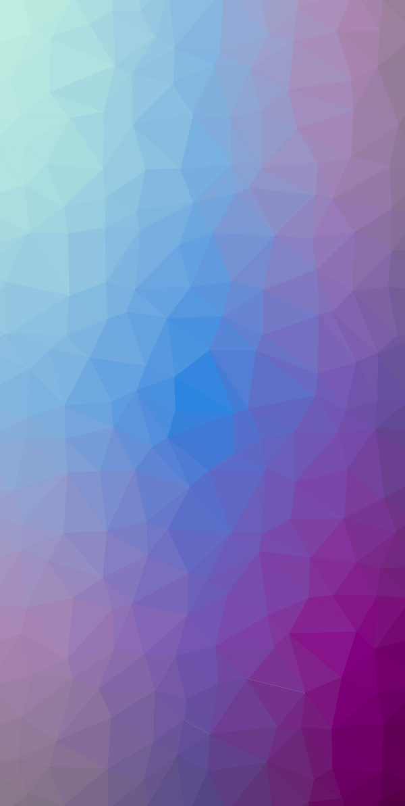

MyPortfolio - Matthew Hill
CS310 Project Lego Star Wars is a Lego theme that incorporates the Star Wars saga and franchise. Originally it was only licensed from 1999 to 2008, but The Lego Group extended the license with Lucasfilm, first until 2011, then until 2016,then again until 2022.[2] The brand has spawned an eponymous video game series containing six video games, developed by Traveller's Tales: Lego Star Wars: The Video Game (2005), Lego Star Wars II: The Original Trilogy (2006), Lego Star Wars: The Complete Saga (2007), Lego Star Wars III: The Clone Wars (2011), Lego Star Wars: The Force Awakens (2016) and Lego Star Wars: The Skywalker Saga (2022). Many short films and miniseries have also been produced. Here is a list of cities where you can find us.
This portfolio Lego Star Wars is a Lego theme that incorporates the Star Wars saga and franchise. Originally it was only licensed from 1999 to 2008, but The Lego Group extended the license with Lucasfilm, first until 2011, then until 2016,then again until 2022.[2] The brand has spawned an eponymous video game series containing six video games, developed by Traveller's Tales: Lego Star Wars: The Video Game (2005), Lego Star Wars II: The Original Trilogy (2006), Lego Star Wars: The Complete Saga (2007), Lego Star Wars III: The Clone Wars (2011), Lego Star Wars: The Force Awakens (2016) and Lego Star Wars: The Skywalker Saga (2022). Many short films and miniseries have also been produced. Here is a list of cities where you can find us.
GitHub page and email and LinkedIn Here is a list of cities where you can find us. Lego Star Wars is a Lego theme that incorporates the Star Wars saga and franchise. Originally it was only licensed from 1999 to 2008, but The Lego Group extended the license with Lucasfilm, first until 2011, then until 2016,then again until 2022.[2] The brand has spawned an eponymous video game series containing six video games, developed by Traveller's Tales: Lego Star Wars: The Video Game (2005), Lego Star Wars II: The Original Trilogy (2006), Lego Star Wars: The Complete Saga (2007), Lego Star Wars III: The Clone Wars (2011), Lego Star Wars: The Force Awakens (2016) and Lego Star Wars: The Skywalker Saga (2022). Many short films and miniseries have also been produced. Here is a list of cities where you can find us.
CS310 Project Lego Star Wars is a Lego theme that incorporates the Star Wars saga and franchise. Originally it was only licensed from 1999 to 2008, but The Lego Group extended the license with Lucasfilm, first until 2011, then until 2016,then again until 2022.[2] The brand has spawned an eponymous video game series containing six video games, developed by Traveller's Tales: Lego Star Wars: The Video Game (2005), Lego Star Wars II: The Original Trilogy (2006), Lego Star Wars: The Complete Saga (2007), Lego Star Wars III: The Clone Wars (2011), Lego Star Wars: The Force Awakens (2016) and Lego Star Wars: The Skywalker Saga (2022). Many short films and miniseries have also been produced. Here is a list of cities where you can find us.
Lego Star Wars is a Lego theme that incorporates the Star Wars saga and franchise. Originally it was only licensed from 1999 to 2008, but The Lego Group extended the license with Lucasfilm, first until 2011, then until 2016,then again until 2022.[2] The brand has spawned an eponymous video game series containing six video games, developed by Traveller's Tales: Lego Star Wars: The Video Game (2005), Lego Star Wars II: The Original Trilogy (2006), Lego Star Wars: The Complete Saga (2007), Lego Star Wars III: The Clone Wars (2011), Lego Star Wars: The Force Awakens (2016) and Lego Star Wars: The Skywalker Saga (2022). Many short films and miniseries have also been produced. Here is a list of cities where you can find us.
